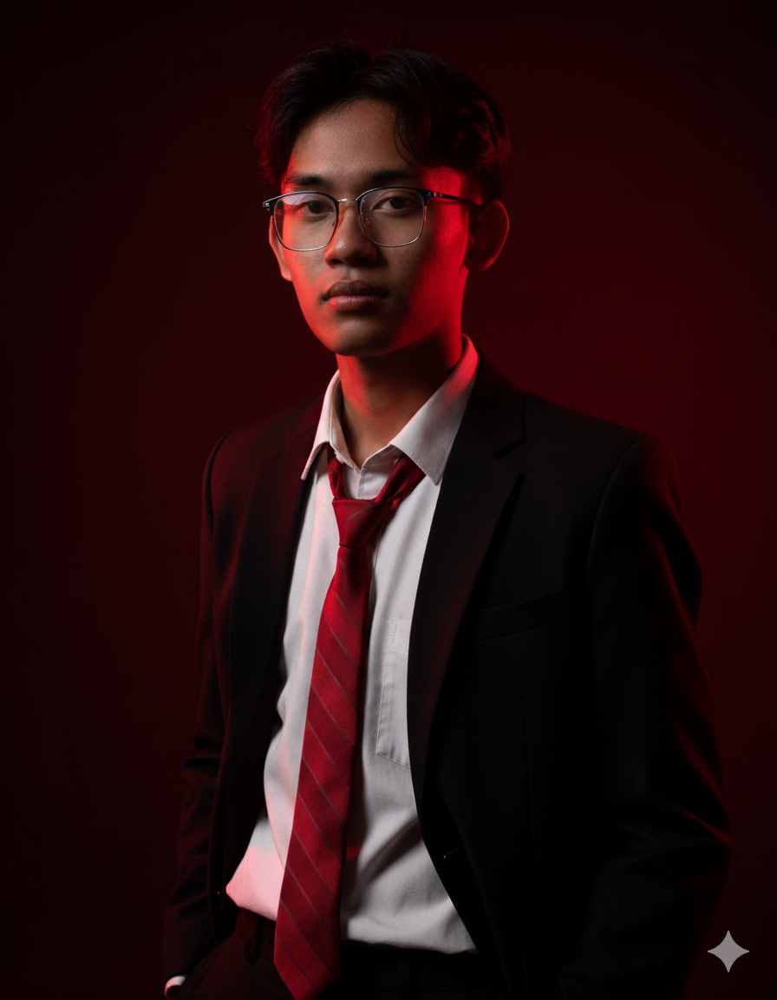

Digital Developer
I BUILD DIGITAL EXPERIENCES.
Saya mengembangkan website responsif dan aplikasi berbasis HTML, CSS, serta JavaScript. Saya juga dapat membangun aplikasi Android dengan antarmuka dan fungsi yang dirancang sesuai kebutuhan, kemudian mengemasnya melalui Android WebView menggunakan Android Code Studio.

/// DIGITAL DEVELOPER
WHO IS ARDA?
Saya adalah seorang Digital Developer yang memiliki keahlian dalam merancang antarmuka pengguna (UI/UX) sekaligus mengembangkan logika teknis di balik layar.
Saya fokus membangun arsitektur digital yang kuat melalui HTML, CSS, dan JavaScript. Saya menciptakan website yang responsif dan dapat diandalkan, serta mampu mengembangkan aplikasi web yang memiliki fungsionalitas mendalam. Layanan saya mencakup perancangan aplikasi dari awal hingga pengemasannya ke dalam format Android (.apk) menggunakan WebView, memastikan produk siap digunakan pada perangkat *mobile*.
Role
Digital Developer
UI/UX Enthusiast
Fokus Utama
Web Apps
Android WebView
Kemampuan Inti
TECHNICAL SKILLS
HTML5
Membangun struktur dasar halaman web dan antarmuka aplikasi yang semantik dan rapi.
CSS3
Merancang styling visual, tata letak, tipografi modern, dan animasi antarmuka yang menarik.
JavaScript
Mengembangkan logika aplikasi yang dinamis dan menangani interaksi pengguna secara penuh.
Responsive Design
Penyesuaian tata letak (layout) secara otomatis agar proporsional untuk HP, tablet, dan desktop.
LocalStorage
Implementasi penyimpanan data di perangkat secara lokal (offline) sesuai kebutuhan fungsi aplikasi.
Android WebView
Menjalankan dan mengemas proyek berbasis web sebagai aplikasi Android APK menggunakan Android Studio.
UI / UX
Perancangan tampilan antarmuka dan penataan alur penggunaan aplikasi agar mudah dan nyaman digunakan.
Debugging
Pemeriksaan menyeluruh pada logika sistem, perbaikan bug, dan optimasi performa JavaScript.
Apa yang saya kerjakan
MY SERVICES
Website Pribadi & Bisnis
Pembuatan website representatif (portofolio, profil perusahaan, atau blog) dengan desain yang rapi, modern, dan disesuaikan dengan identitas brand.
Landing Page
Desain satu halaman (single-page) yang difokuskan untuk mempromosikan produk, mengumpulkan prospek, dan meningkatkan ketertarikan audiens.
Aplikasi Web Interaktif
Pengembangan aplikasi khusus yang dijalankan di browser menggunakan HTML, CSS, dan JavaScript untuk menyelesaikan kendala atau memproses data tertentu.
Pembuatan Aplikasi Android
(Berbasis Web)
Membangun dari awal aplikasi dengan antarmuka, fitur, navigasi mobile, dan fungsionalitas lengkap yang dirancang khusus untuk Android (menggunakan arsitektur web).
Pengemasan HTML/JS ke APK
Layanan konversi untuk membungkus proyek website (HTML/CSS/JS) yang sudah Anda miliki ke dalam format APK Android menggunakan WebView.
Perbaikan UI/UX & Layout
Merombak tata letak (layout) sistem lama Anda agar tampil lebih modern, proporsional, mudah digunakan, dan sepenuhnya responsif di semua perangkat.
Perbaikan Bug & JavaScript
Mencari dan menyelesaikan konflik atau kesalahan (bug) pada script, serta mengoptimalkan jalannya fungsi sistem yang ada.
Aplikasi Data LocalStorage
Membangun fitur manajemen atau penyimpanan data offline langsung di memori perangkat klien (tanpa database server eksternal) sesuai keperluan.
WORK PROCESS
Tahapan kerja yang terstruktur untuk memastikan hasil yang sesuai dengan kebutuhan teknis dan target Anda.
Tahap 01
Konsultasi Kebutuhan
Mendiskusikan visi, target, fitur yang diperlukan, dan menentukan apakah solusi yang tepat berupa website statis, web app interaktif, atau paket APK Android.
Tahap 02
Perencanaan Desain & UI/UX
Menyusun struktur tata letak aplikasi atau halaman (wireframe) dan memastikan alur interaksi antarmuka ramah pengguna (user-friendly).
Tahap 03
Pengembangan Kode (Coding)
Mengeksekusi desain menggunakan HTML dan CSS, lalu menghidupkan fungsionalitas dan logika interaksi aplikasi menggunakan JavaScript.
Tahap 04
Pengujian & Debugging
Memastikan antarmuka berjalan responsif di semua perangkat, fungsi berjalan sesuai logika, dan melakukan perbaikan (debugging) jika terdapat kendala.
Tahap 05
Pengemasan WebView APK
Bagi proyek aplikasi Android, file web akan dibungkus menggunakan WebView dalam lingkungan Android Studio untuk dijadikan file siap instalasi (.apk).
Tahap 06
Penyerahan Hasil
Menyerahkan hasil akhir berupa file kode (HTML/CSS/JS) untuk di-*hosting* atau file APK untuk dipasang di perangkat, beserta instruksi penggunaan dasar.
Initiate Connection
LET'S BUILD SOMETHING GREAT.
Punya ide website statis, aplikasi web, atau aplikasi Android WebView? Mari diskusikan kebutuhan teknismu dan kita wujudkan menjadi produk nyata.
Location
Indonesia
Tersedia Remote
Direct Contact
WA: 089636503978